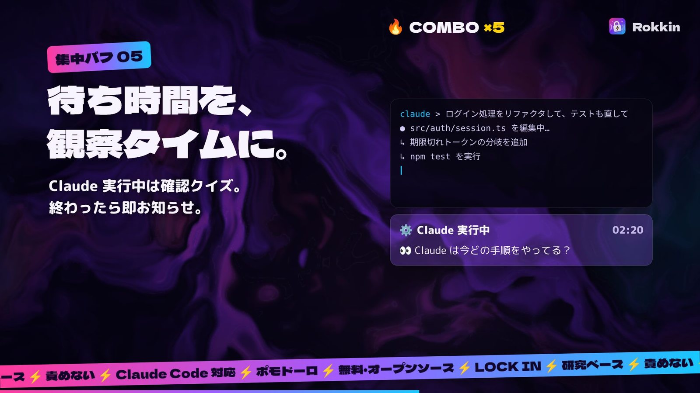

脱線しても、
秒で戻る。
Rokkin（ロッキン）＝ ロックイン。ADHDの「気づいたらスマホ」を、研究で効果が示された7つの集中バフで止める Mac のメニューバーアプリ。Claude Code を回しながらの QA や開発にも対応しています。
無料・オープンソース（MIT ライセンス）／ macOS 13 以降
72秒でわかる、7つの集中バフ
どんな仕組みで、なぜ効くのか。研究の数字つきで一気に見せます。音楽入りですが、内容は画面の文字だけでわかります。
- d=0.65
if-then プランの効果量94研究のメタ分析
- 41研究
自己モニタリングでADHDの集中行動が改善主に子ども・学生の研究
- −57%
アプリを開く回数短い待ち＋「やめる」選択肢、6週間
- g=0.25
ピンク/白ノイズの効果ADHD傾向の人、個人差あり
7つの集中バフと、その根拠
根性は使いません。「脱線に気づいて戻る」を仕組みにしています。研究の多くは子どもや一般の成人が対象なので、効き方は人それぞれ。アプリのダッシュボードで、自分に効いているか確かめられます。
-
1行書いたら、即 Lock in。
d=0.65やることを1行書いて Enter で開始（空欄でもOK）。「調べたくなったら → メモして戻る」のような if-then プランは最初から入っているので、書かなくても効きます。完了の定義は書きたいときだけ。
if-then プラン（実行意図）：94研究・8000人超のメタ分析で目標達成を後押し（d=0.65）。ADHDの子どもでも反応の抑制や注意の切り替えが改善。Gollwitzer & Sheeran 2006 ／ Gawrilow & Gollwitzer 2008, 2011
-
「今、集中してた？」
41研究ランダムな間隔で小窓が「今、この作業に注意が向いてた？」と聞きます。はいが続けば🔥コンボ。いいえなら何に引っ張られたかを1タップ。「気づけたら勝ち」として、対応する if-then プランを返します。
注意の自己モニタリング：41研究のレビューで、ADHDの子どもの授業中の集中行動が改善。インターバルタイマーで off-task が 46.8% → 27.3% に減った研究も。Bruhn et al. 2015 ／ Sluiter et al. 2019
-
調べたい？ 駐車場へ。
RCT⌃⌥Mで思いつきや調べたいことを書き留め、すぐ作業に戻ります。たまったメモは休憩のときにまとめて片付けます。
Distractibility delay：ランダム化比較試験で効果が示された成人ADHDの認知行動療法で使われる技法。Safren et al. 2005, 2010
-
開く前に、ひと呼吸。
−57%決めておいたアプリやサイトを開くと、数秒の待ちと「作業に戻る／メモして戻る／5分だけ使う」の選択肢が出ます。禁止はしません。
セルフナッジ：短い待ちと「やめる」選択肢を挟むアプリで、6週間後に対象アプリを開く回数が57%減。一番効いたのは「やめる」選択肢の提示。Grüning et al., PNAS 2023
-
待ち時間を、観察タイムに。
Claude Code の hooks で「実行中・完了・入力待ち」を小窓に表示。実行中は「Claude は今どの手順をやってる？」のような問いを順に出し、ただ眺める時間を確認作業に変えます。終わったら音で呼び戻します。
状態調整モデル：ゆっくりしたペースの課題でADHDの成績が落ちやすい（メタ分析）。Metin et al. 2012。この使い方自体の効果は未検証なので、ダッシュボードで「Claude実行中」と「それ以外」の集中率を比べられるようにしています。
-
区切って、休む。🍅
g=0.25決めた長さの作業ブロックと短い休憩。ポモドーロモード（25分＋5分、4回ごとに長い休憩）もワンタップ。ブロッククリアの瞬間には紙吹雪 🏆（集中中は出ません）。背景ノイズ（ピンク／ホワイト）は任意です。
決めた間隔の休憩：自分で決めるより疲労・注意散漫が少なかった（Biwer et al. 2023）。背景ノイズ：ADHD傾向の人で小さな改善（g=0.25）、そうでない人では逆効果（Nigg et al. 2024）。
-
自分専用に、進化する。
各ブロックで最初に「いいえ」が出るまでの時間から、あなたに合うブロックの長さを提案。ダッシュボードでは、集中率の週ごとの推移、時間帯別の集中率、脱線のきっかけと寄り道先のランキング、ノイズあり／なしの比較まで一目でわかります。いちばん多い脱線のきっかけには、効きやすい if-then プランをワンクリックで追加。集計もデータもすべて Mac の中だけです。
集中持続に合わせたタイマー：自分の集中が続く時間を測り、それに合わせてタイマーを設定する（成人ADHDの認知行動療法、Safren et al.）。
Claude Code と、
一緒に。
Claude にブラウザ操作で QA をさせながら、画面を見て確認する。そんな作業のために作りました。
- 設定画面のボタンひとつで
~/.claude/settings.jsonに hooks を追加（元の設定はバックアップ） - 実行中・完了・入力待ちが小窓に出て、終わったら音で知らせる
- 気づいたことは ⌃⌥M ですぐメモ。リザルトで Markdown にしてコピーできる
- hooks は状態を1行書き込むだけ。ネットワーク通信はしません

無料で入手
いまはソースからビルドします。必要なのは macOS 13 以降と、Xcode または Command Line Tools（xcode-select --install）です。
ソースを取ってくる
git clone https://github.com/79yuuki/rokkin.git cd rokkinビルドする
./scripts/build-app.shSwiftPM が動かない環境では、自動で swiftc を直接使うビルドに切り替わります。
インストールして起動
ditto build/Rokkin.app /Applications/Rokkin.app open /Applications/Rokkin.app
Rokkin が約束すること
- 責めない。気づけたら勝ち。
- 罰ゼロ。
- データは、Mac から出ない。
Rokkin は医療機器ではありません。薬物療法やカウンセリングなどの治療の代わりではなく、日々の作業を補助するツールです。
参考文献
- Bruhn, McDaniel & Kreigh (2015). Self-monitoring interventions for students with behavior problems: A systematic review. Behavioral Disorders.
- Sluiter, Groen, de Jonge & Tucha (2019). Exploring neuropsychological effects of a self-monitoring intervention for ADHD-symptoms in school. Applied Neuropsychology: Child.
- Gollwitzer & Sheeran (2006). Implementation intentions and goal achievement: A meta-analysis. Advances in Experimental Social Psychology, 38.
- Gawrilow & Gollwitzer (2008). Implementation intentions facilitate response inhibition in ADHD children. Cognitive Therapy and Research, 32.
- Gawrilow, Gollwitzer & Oettingen (2011). If-then plans benefit executive functions in children with ADHD. Journal of Social and Clinical Psychology, 30.
- Safren et al. (2005, 2010). Cognitive-behavioral therapy for adults with ADHD (RCTs) ／ Mastering Your Adult ADHD (2nd ed., 2017).
- Grüning, Riedel & Lorenz-Spreen (2023). Directing smartphone use through the self-nudge app one sec. PNAS, 120(8).
- Metin, Roeyers, Wiersema, van der Meere & Sonuga-Barke (2012). A meta-analytic study of event rate effects on Go/No-Go performance in ADHD. Biological Psychiatry.
- Biwer, Wiradhany, Oude Egbrink & de Bruin (2023). Understanding effort regulation: Comparing ‘Pomodoro’ breaks and self-regulated breaks. British Journal of Educational Psychology, 93.
- Nigg et al. (2024). Do white noise or pink noise help with task performance in youth with ADHD or with elevated attention problems? JAACAP, 63(8).